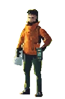
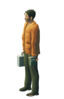
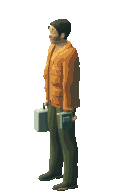

原野中的记录者
先让一个完整的人物成立。
同一人体、骨架和衣装，固定相机与光向，离线导出朝左站姿。此页检验新制作链与原画的距离；人物美术仍未通过。
实际尺寸
统一画布 128 × 196；人物可见身高 174px。参照由 2 倍展示图整数还原，渲染不拆分缩放头或四肢。



整数倍检查
桌面 3 倍，小屏 2 倍。重点看头颈肩、眼睛、衣摆、膝踝与握点。
目前的判断
- 已落实
- CC0 来源和实际文件、可编辑 Blender 母版、连续人体蒙皮、衣装拟合、器物左右归属、固定相机和重复导出。
- 仍有差距
- 脸部辨识与原画气质、外套剪裁、裤装和鞋型、手与器物的接触，以及原画有组织的织物色块。色阶归并仍显三维渲染感。
- 下一道门槛
- 先在这个完整模型上修正造型与光色，再判断能否进入少量负重关键姿态。尚未制作新步态，也未接入首页。